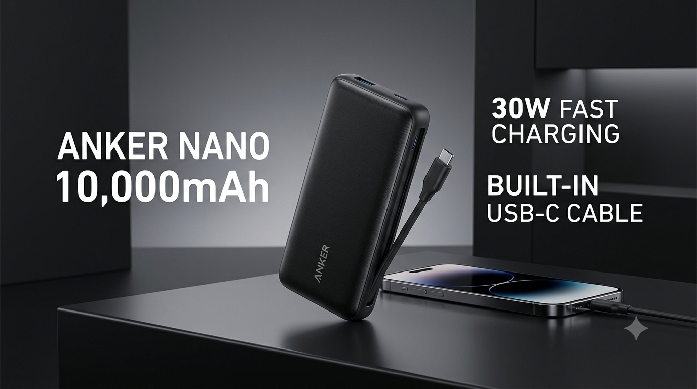

Introduction
The Anker Nano Power Bank (Model A1259) is a compact portable charger designed to extend the battery life of your smartphones and other USB-C devices. With a 10,000mAh capacity and 30W fast charging capability, it aims to provide quick power top-ups in a pocketable form factor.
This review examines the key features, specifications and design of the Anker Nano Power Bank to help you determine if it's the right portable power solution for your needs.
Key Features
- 10,000mAh battery capacity
- 30W fast charging output
- Built-in USB-C cable
- Compact and lightweight portable design
- Model A1259
- USB-C input and output ports
10,000mAh Battery
The 10,000mAh capacity makes this power bank suitable for a single full charge or multiple partial charges of most modern smartphones. The actual number of charges depends on your device's battery size and current battery level.
A 10,000mAh power bank typically provides enough capacity for one complete charge of mid-range smartphones or partial charges for larger devices and tablets.
30W Fast Charging
The 30W fast charging capability is designed to deliver rapid power delivery to compatible devices. This allows supported smartphones and USB-C devices to charge more quickly compared to standard charging speeds.
Fast charging speed varies depending on your device's charging capabilities and power requirements. Always use appropriate cables and chargers recommended by your device manufacturer.
Built-in USB-C Cable
The integrated USB-C cable eliminates the need to carry a separate charging cable. This built-in cable connects the power bank to your device, making it a more compact and convenient all-in-one charging solution.
The built-in cable also means fewer items to keep track of when traveling or carrying the power bank in a bag or pocket.
Compact Portable Design
The Anker Nano Power Bank is designed to be pocketable and easy to carry. Its compact form factor makes it a suitable option for travel, commuting, work and everyday use when you need an extra charge on the go.
The lightweight design allows it to fit easily into backpacks, messenger bags or even jacket pockets without adding significant weight or bulk.
Who Is It For?
The Anker Nano Power Bank may be a good option for:
- Smartphone users who need portable charging throughout the day
- Travelers and commuters who want a compact power solution
- People who prefer a built-in cable over carrying separate chargers
- Those looking for 30W fast charging capability
- Users of USB-C devices and smartphones
Pros and Cons
Pros
- 10,000mAh capacity for reliable charging
- 30W fast charging support
- Built-in USB-C cable included
- Compact and portable design
- Easy to carry and travel with
- Integrated cable reduces items to carry
- Compatible with USB-C devices
Things to Consider
- Fast charging speed depends on device compatibility
- Built-in cable cannot be replaced if damaged
- Charging time varies by device and power requirements
- Actual capacity and charge cycles may differ in practice
- Not suitable for devices without USB-C support
Final Verdict
The Anker Nano Power Bank (Model A1259) offers a straightforward combination of useful features: 10,000mAh capacity, 30W fast charging, a built-in USB-C cable and a compact portable design.
Whether it's the right choice for you depends on your charging needs, device compatibility, and how often you require portable power. The integrated cable and compact size make it convenient for everyday carry, while the 30W fast charging supports quick power delivery to compatible devices.
To make an informed decision, check the current price, availability and customer reviews on Amazon using the link below.
Check Price on Amazon
Amazon prices and availability can change. Click below to see the current price, availability, customer reviews and full product details.
Check Price on Amazon